01
打开粤省事，确认城市是「惠州」，点底部「办事」
微信搜索并打开「粤省事」小程序（或长按上方的二维码）。先看左上角是否显示「惠州」——图中显示惠州和气温，说明定位正确；若显示其他城市，点城市名即可切换。确认后，点屏幕最下方中间的「办事」。
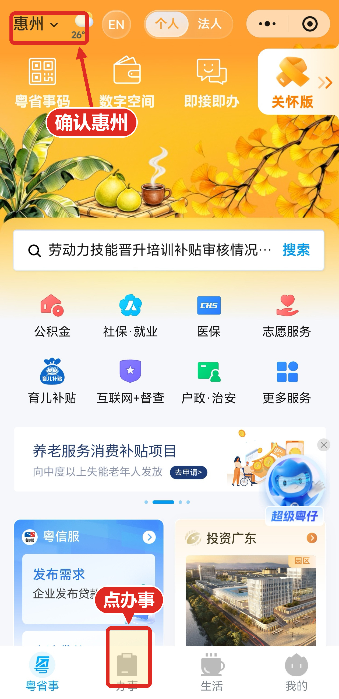
点击放大先确认「惠州」，再点底部的「办事」
翡翠山房小区 · 电子投票选聘物业服务企业
全程只需要点击，不用输入任何字
长按没反应？直接在微信里搜索「粤省事」，一样能进，进去后同样按下面 12 步走。
微信搜索并打开「粤省事」小程序（或长按上方的二维码）。先看左上角是否显示「惠州」——图中显示惠州和气温，说明定位正确；若显示其他城市，点城市名即可切换。确认后，点屏幕最下方中间的「办事」。

点击放大先确认「惠州」，再点底部的「办事」
「办事」页从上到下依次是「首页服务」「常用服务」「人生事」「社会关爱」四个分组，要往下滑一段才能看到「人生事」。在「人生事」分组里点「住房置业」——它在第二排第三个，左边是「教育」，右边是「不动产」。
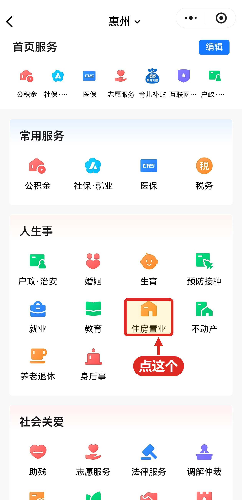
点击放大「人生事」分组里，第二排第三个
进入「住房置业」页，排在最上面的第一项就是「业主投票决议」，不用在列表里找。下面依次是商品房网签合同查询、预售许可证查询、房屋维修资金查询等，都与本次投票无关。页面底部标注「省自然资源厅、惠州市住房和城乡建设局 联合提供服务」，可确认是惠州本地服务。
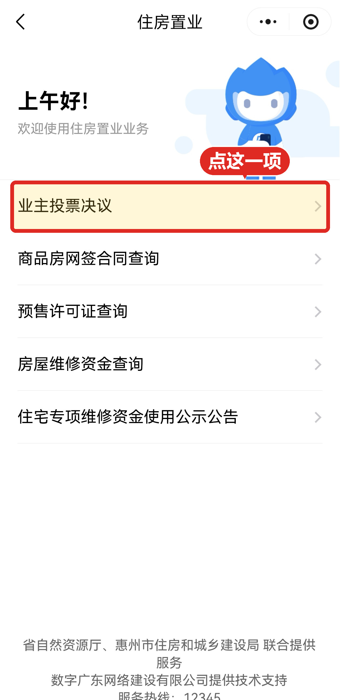
点击放大就在列表最上面第一项
系统弹出提示「本次操作需要您进行登录验证」，这是正常的实名核验环节。请注意弹窗下面有两个按钮：左边是「取消」，右边是「确定」——要点右边那个确定。不小心点到左边的「取消」会退出，得从头再来。
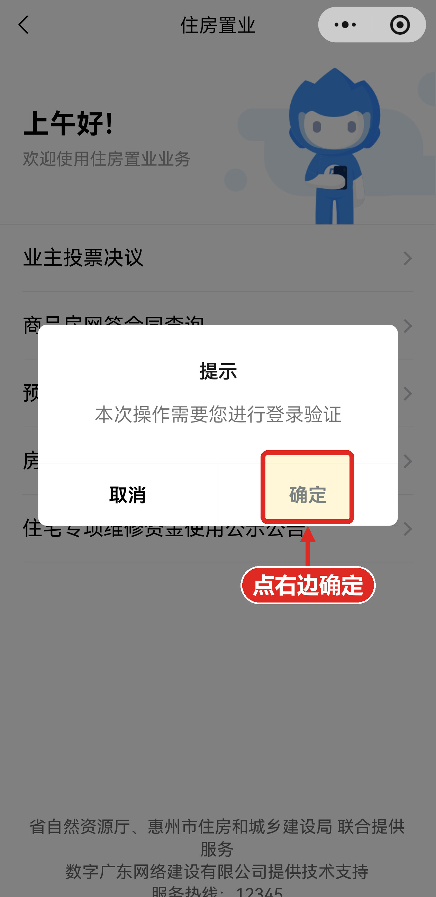
点击放大点右边「确定」，不要点左边的「取消」
页面出现四种登录方式，默认选中第一项「广东省统一身份认证」，此时下方「我同意……」的方框尚未勾选。
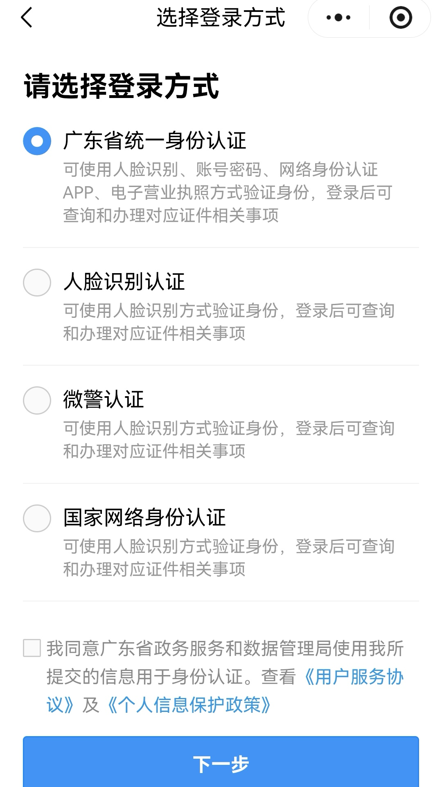
点击放大默认选中第一项
本指引以选择第二项「人脸识别认证」为例。无论选哪种方式，最后都要刷脸，选哪一项都能办成。然后务必把下方「我同意……」的方框打上勾，勾上以后才能点页面底部的「下一步」。三步缺一不可：① 选方式 → ② 打勾 → ③ 点下一步。
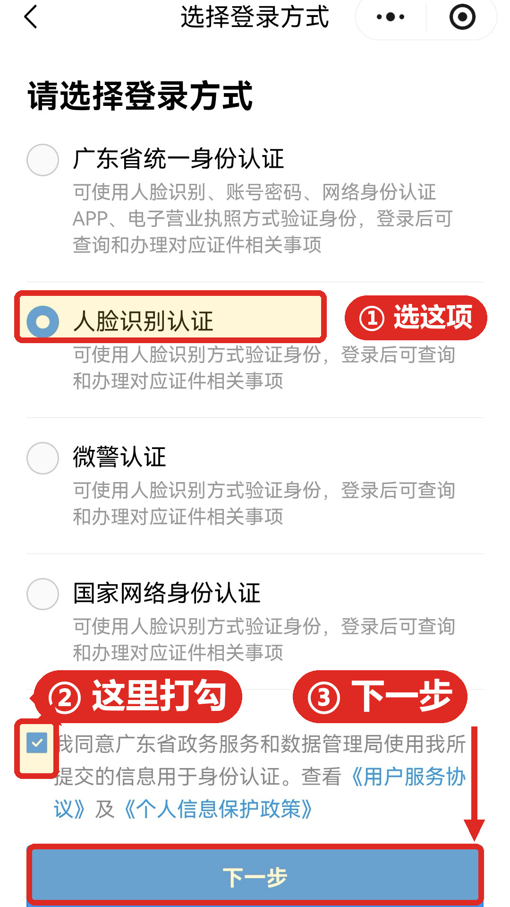
点击放大① 选这项 → ② 这里打勾 → ③ 点下一步
页面自动带出证件类型、姓名、身份证号（一般无需手动填写）。先勾选「我同意……」方框，再点蓝色按钮「开始人脸识别验证」，按屏幕提示完成刷脸。
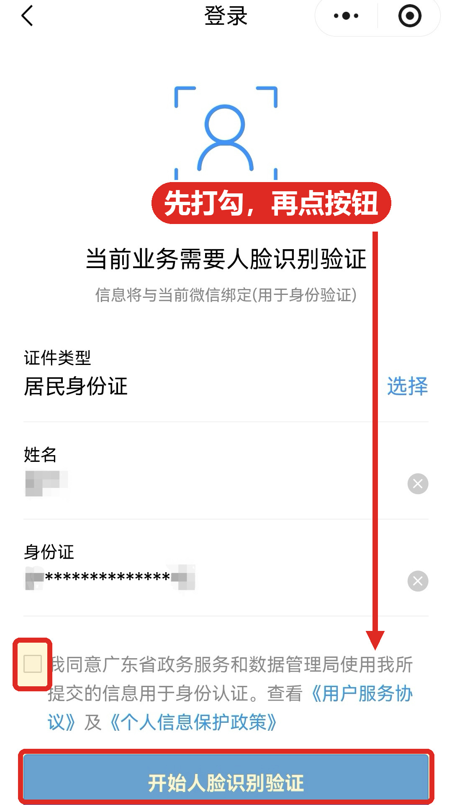
点击放大① 先打勾 → ② 再点按钮刷脸（图中个人信息已遮蔽）
点「开始人脸识别验证」后会跳到微信自己的人脸核验页（页面上面标注「粤省事 申请使用」）。这一步由微信提供，页面会提示「请确保为本人操作」。先确认「我已阅读并同意……」前面的圆圈已打勾（通常默认勾好，若没勾请点一下），再点绿色按钮「下一步」，然后按屏幕提示完成刷脸。
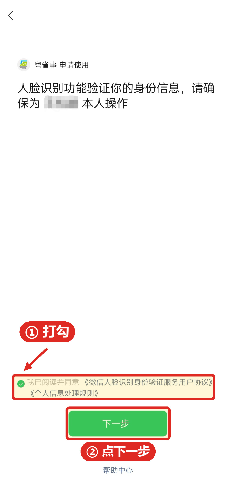
点击放大① 确认打勾 → ② 点下一步
刷脸通过后进入「授权登录」页。页面写明本次由「惠州市住房和城乡建设局」提供服务，需提供姓名、证件信息、手机号码用于核验身份。确认后点击「开始办理」。
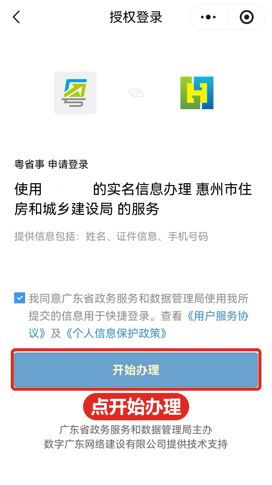
点击放大点击「开始办理」
页面抬头标注主管单位为「惠州市住房和城乡建设局」。正文是「投票须知 / 投票要求」，说明依据《民法典》第 278 条可由业主共同决定的事项（其中第（四）项即「选聘和解聘物业服务企业或者其他管理人」）。这一屏只是说明，无需操作。
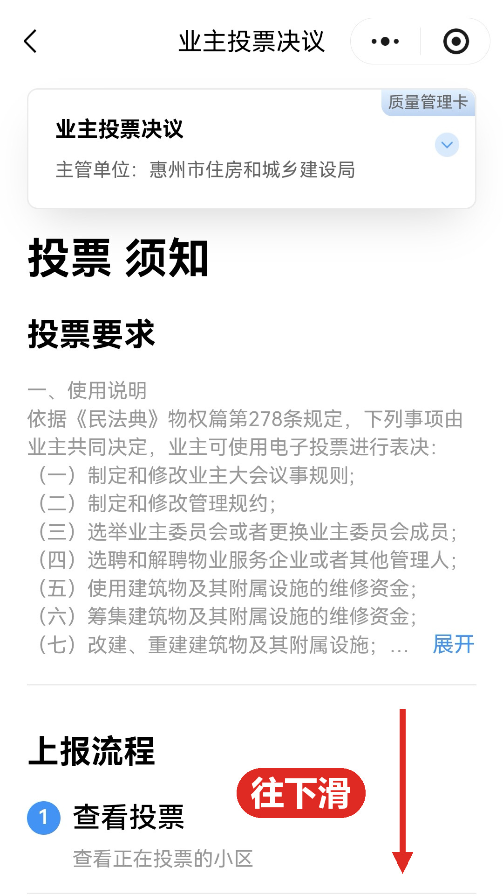
点击放大先看须知，不用操作
这一页比较长，向下滑动到底部。经过「上报流程：查看投票 / 参与投票 / 查看结果」之后，点击蓝色按钮「开始投票」。页面内另有「咨询电话」，可随时查看。
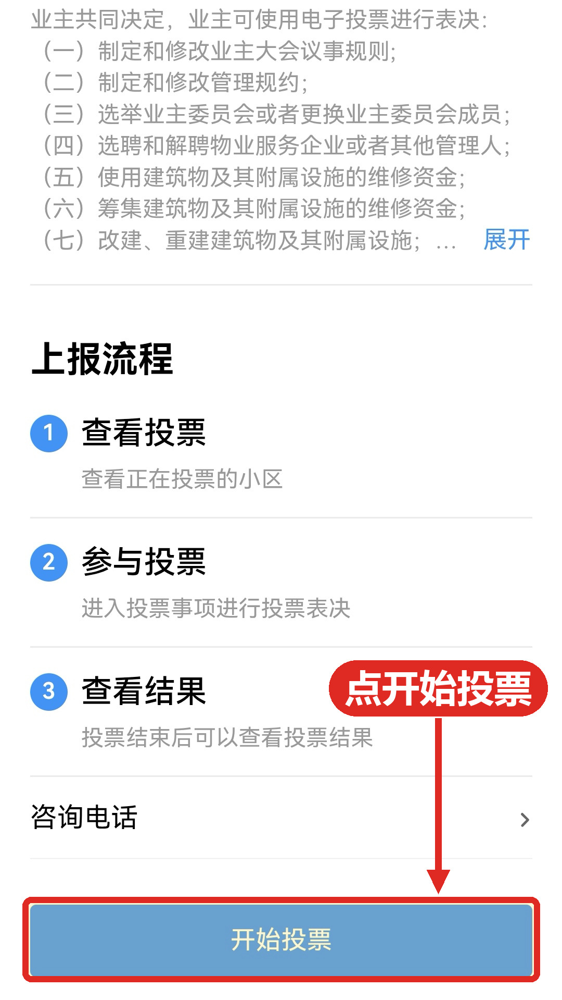
点击放大底部蓝色按钮「开始投票」
进入后是「业主投票决议」的议题列表页，上方有「进行中」和「已结束」两个页签。投票开放前，「进行中」显示 0 项、页面写着「没有查询到记录」，这是正常的。9 月 15 日 10:00 以后，本次议题就会出现在「进行中」页签下——点开议题，选择你心仪的物业服务企业，按页面提示提交即可。若届时仍查不到议题，列表上方有一行「如无法查询到您的投票议题，请点击这里」，点它按提示处理。
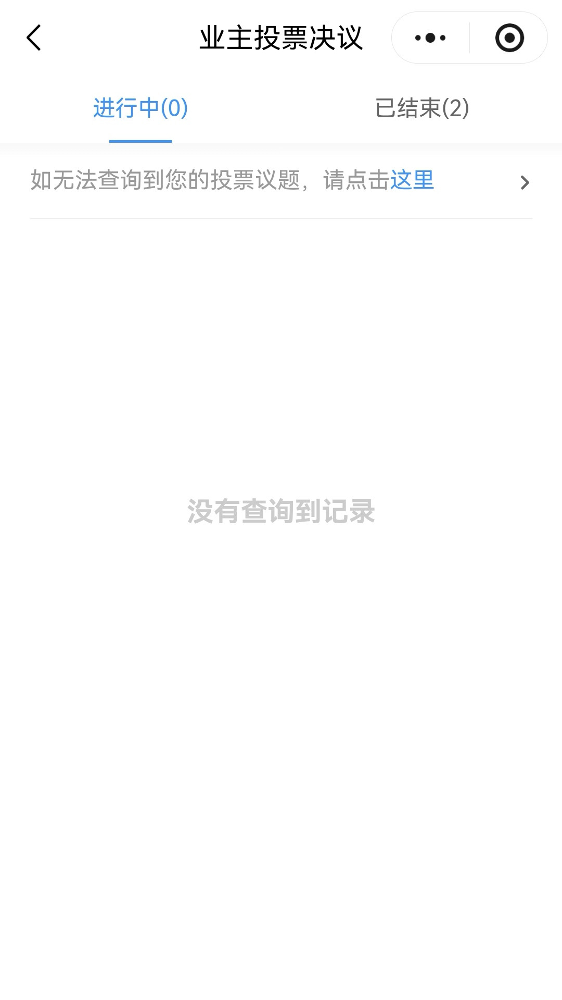
点击放大此图为开放前的状态：进行中 0 项、已结束 2 项